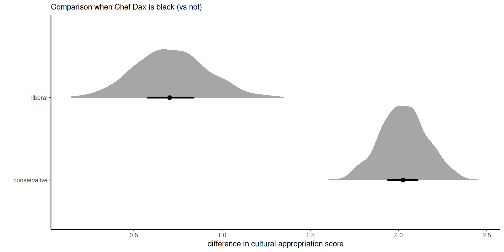
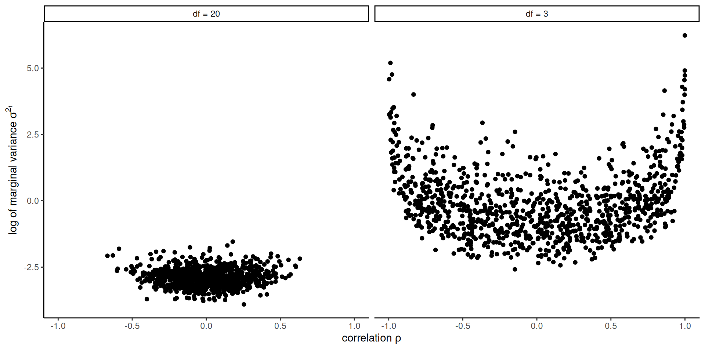
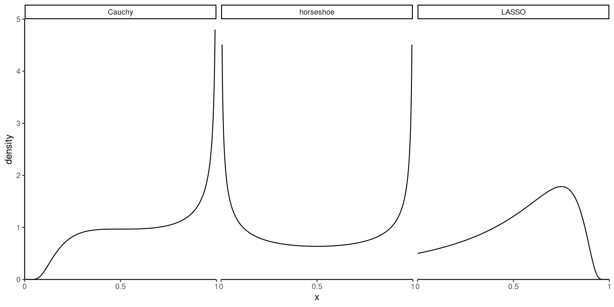
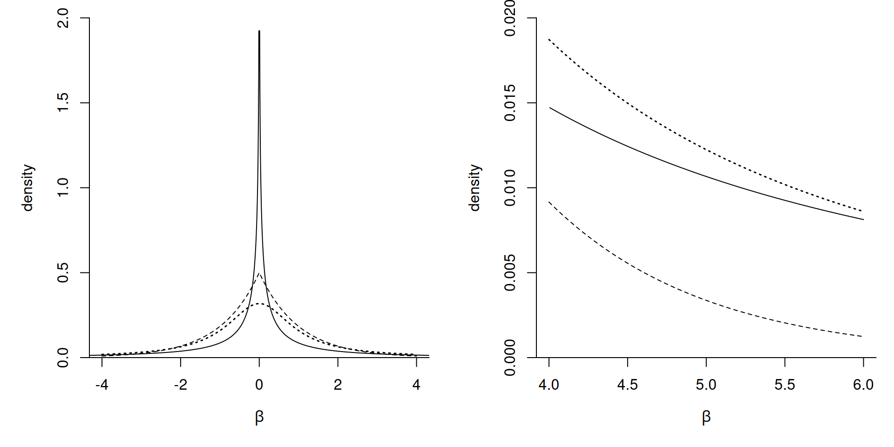
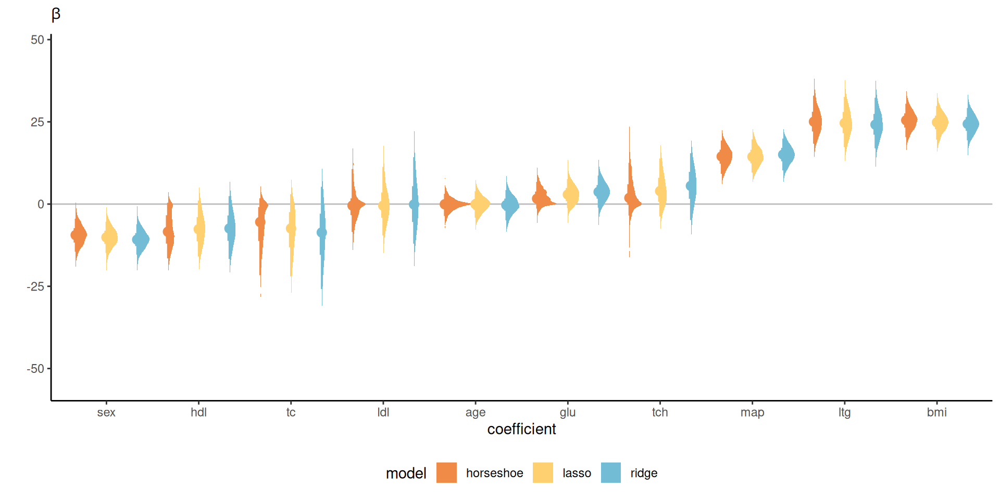

Bayesian modelling
Bayesian regression
Last compiled Friday Mar 14, 2025
Bayesian regression
Same, same, but different…
- Generalized linear models, with distributional assumptions and link functions.
- We assign priors to \(\boldsymbol{\beta}\) which
- can provide shrinkage (regularization towards zero)
- can enable variable selection (spike and slab)
Model setup
Consider regression models with
- model (or design) matrix \(\mathbf{X} \in \mathbb{R}^{n \times p}\)
- regression coefficients \(\boldsymbol{\beta} = (\beta_1, \ldots, \beta_p)^\top \in \mathbb{R}^p\)
Ordinary linear regression model.
In the ordinary linear regression model, observations are independent and homoscedastic and \[\begin{align*} \boldsymbol{Y} \mid \mathbf{X}, \boldsymbol{\beta}, \omega \sim \mathsf{Gauss}_n(\beta_0\mathbf{1}_n + \mathbf{X}\boldsymbol{\beta}, \omega^{-1}\mathbf{I}_n). \end{align*}\]
The intercept \(\beta_0\) receives special treatment, is always included. It is typically assigned an improper prior \(p(\beta_0) \propto 1.\)
Decomposition of quadratic forms
For quadratic forms (in \(\boldsymbol{x}\)) with \[\begin{align*} & (\boldsymbol{x} - \boldsymbol{a})^\top \mathbf{A}(\boldsymbol{x} - \boldsymbol{a}) + (\boldsymbol{x} - \boldsymbol{b})^\top \mathbf{B}(\boldsymbol{x} - \boldsymbol{b}) \\ &\stackrel{\boldsymbol{x}}{\propto} (\boldsymbol{x} - \boldsymbol{c})^\top \mathbf{C}(\boldsymbol{x} - \boldsymbol{c}) \end{align*}\] where \(\mathbf{C} = \mathbf{A} + \mathbf{B}\) and \(\boldsymbol{c}= \mathbf{C}^{-1}(\mathbf{A}\boldsymbol{a} + \mathbf{B}\boldsymbol{b})\).
This is useful to complete the square in Gaussian-Gaussian models.
Bayesian Gaussian linear model
Consider Gaussian-gamma conjugate priors for the mean and precision parameters \(\boldsymbol{\beta}\) and \(\omega\), \[\begin{align*} \boldsymbol{\beta} \mid \omega &\sim \mathsf{Gauss}\left\{\boldsymbol{\mu}_0, ( \omega\boldsymbol{\Omega}_0)^{-1}\right\} \\ \omega &\sim \mathsf{gamma}(\nu_0/2,\tau_0/2). \end{align*}\] Recall the sampling distribution of the ordinary least squares estimator is \[\widehat{\boldsymbol{\beta}} \sim \mathsf{Gauss}_p\{\boldsymbol{\beta}, (\omega\mathbf{X}^\top\mathbf{X})^{-1}\}.\]
Conditional distributions
The conditional and marginal posterior distributions for the mean coefficients \(\boldsymbol{\beta}\) and for the precision \(\omega\) are \[\begin{align*} \boldsymbol{\beta} \mid \omega, \boldsymbol{y} &\sim \mathsf{Gauss}_p\left\{\boldsymbol{\mu}_n, (\omega\boldsymbol{\Omega}_n)^{-1}\right\} \\ \omega \mid \boldsymbol{y} &\sim \mathsf{gamma}\left\{(\nu_0 + n)/2, \tau^2_n/2\right\}. \end{align*}\]
If we integrate over the precision, we get instead \[\begin{align*} \boldsymbol{\beta} \mid \boldsymbol{y} &\sim \mathsf{Student}_p(\boldsymbol{\mu}_n, \tau_n/(\nu_0+n) \times \mathbf{\Omega}_n^{-1}, \nu_0 + n) \end{align*}\]
Posterior parameters
The precision is the sum of the precision of OLS estimator and prior precision.
The posterior mean is a weighted combination of the prior and OLS means, weighted by the scaled precision. \[\begin{align*} \boldsymbol{\Omega}_n &= \mathbf{X}^\top\mathbf{X} + \boldsymbol{\Omega}_0\\ \boldsymbol{\mu}_n &= \boldsymbol{\Omega}_n^{-1}(\mathbf{X}^\top\mathbf{X}\widehat{\boldsymbol{\beta}} + \boldsymbol{\Omega}_0\boldsymbol{\mu}_0) = \boldsymbol{\Omega}_n^{-1}(\mathbf{X}^\top\boldsymbol{y} + \boldsymbol{\Omega}_0\boldsymbol{\mu}_0)\\ \tau_n &= \tau_0 + (\boldsymbol{y} - \mathbf{X}\widehat{\boldsymbol{\beta}})^\top(\boldsymbol{y} - \mathbf{X}\widehat{\boldsymbol{\beta}}) + (\boldsymbol{\mu}_n - \widehat{\boldsymbol{\beta}})^\top \mathbf{X}^\top\mathbf{X}(\boldsymbol{\mu}_n - \widehat{\boldsymbol{\beta}}) \\& \quad + (\boldsymbol{\mu}_n-\boldsymbol{\mu}_0)^\top\boldsymbol{\Omega}_0(\boldsymbol{\mu}_n-\boldsymbol{\mu}_0) \end{align*}\]
Scale mixture of Gaussians
If \(X \mid \sigma^2 \sim \mathsf{Gauss}(0, \sigma^2)\) and we assign a prior \(p(\sigma^2)\)
- if \(\sigma^2 \sim \mathsf{inv. gamma}(\nu/2, \nu/2)\), then \(X \sim \mathsf{Student}(0,1, \nu)\)
- if \(\sigma^2 \sim \mathsf{exp}(1/\lambda^2),\) then \(X \sim \mathsf{Laplace}(0, \lambda).\)
Sketch of proof
- write down the joint posterior as \[\begin{align*} p(\boldsymbol{\beta}, \omega \mid \boldsymbol{y}) &\propto p(\boldsymbol{y} \mid \boldsymbol{\beta}, \omega) p(\omega) \end{align*}\]
- rewrite the first quadratic form in \(\boldsymbol{y}-\mathbf{X}\boldsymbol{\beta}\) using the orthogonal decomposition \[\begin{align*} (\boldsymbol{y}-\mathbf{X}\widehat{\boldsymbol{\beta}}) + (\mathbf{X}\widehat{\boldsymbol{\beta}} - \mathbf{X}\boldsymbol{\beta}) \end{align*}\]
- pull terms together and separate the conditional posterior \(p(\boldsymbol{\beta} \mid \boldsymbol{y}, \omega)\) and \(p(\omega \mid \boldsymbol{y})\)
Sketch of proof (continued)
- use decomposition of quadratic forms with \(\boldsymbol{a} = \widehat{\boldsymbol{\beta}}\), \(\mathbf{A}=\mathbf{X}^\top\mathbf{X}\), \(\boldsymbol{b} = \boldsymbol{\mu}_0\) and \(\mathbf{B}=\boldsymbol{\Omega}_0\)
- the marginal of \(\boldsymbol{\beta}\) is obtained by regrouping all terms that depend on \(\omega\) and integrating over the latter, recognizing the integral as an unnormalized gamma density
Cultural appropriation
Study 4 of Lin et al. (2024) is a 3 by 2 by 2 three-way between-subject ANOVA focusing on cultural appropriation using a fictional scenario on publication of a soul food recipe cookbook from Chef Dax.
Experimental variables
- ethnicity: chef is African-American or not
- action: the way he obtained the recipes (by peeking without permission in kitchens, by asking permission or without mention (control)
- political ideology of respondant (liberal or conservative).
Posterior densities for marginal effects
Figure 1: Difference in appropriation rating for black vs non-black Chef Dax, average accross different levels of brand action.
Chef Dax and cultural appropriation
The coefficients and standard errors from the linear regression are very nearly similar to the posterior mean and standard deviations for \(\boldsymbol{\beta}\) from the marginal Student-\(t,\) owing to the large sample size and uninformative priors.
On average, liberals perceive cultural appropriation more strongly (with nearly 2 points more), than conservatives (0.7 points on average).
Modelling random effects
Gaussian mixed models in frequentist statistics are of the form \[\begin{align*} \boldsymbol{Y} \mid \mathcal{B}=\boldsymbol{b} &\sim \mathsf{Gauss}_n\left(\mathbf{X}\boldsymbol{\beta} + \mathbf{Z}\boldsymbol{b}, \sigma^2 \mathbf{I}_n\right)\\ \mathcal{B} &\sim \mathsf{Gauss}_q(\boldsymbol{0}_q, \boldsymbol{\Psi}). \end{align*}\]
Bayesians also assign priors to \(\boldsymbol{\beta}\) as well! but typically apriori independent with \(\mathsf{Va}_{\boldsymbol{\beta}}(\boldsymbol{\beta}) \propto \mathbf{I}_p.\)
Prior for covariance matrices
We need a prior for \(p \times p\) symmetric positive definite matrix random matrices!
We consider two cases:
- Wishart (precision) / inverse Wishart (covariance), the conjugate prior for Gaussian
- onion peel prior on the correlation matrix
Wishart allows for conjugacy, but has unintuitive properties.
Wishart distribution
We say \(\mathbf{Q} \sim \mathsf{Wishart}_p(\nu, \mathbf{S})\) for \(\nu>0\) degrees of freedom and scale \(\mathbf{S}\) if it’s density is proportional to \[\begin{align*} f(\boldsymbol{Q}) \stackrel{\boldsymbol{Q}}{\propto} |\boldsymbol{Q}|^{(\nu-p-1)/2}\exp\left\{-\frac{\mathrm{tr}(\mathbf{S}^{-1}\boldsymbol{Q})}{2}\right\}, \quad \nu > p-1. \end{align*}\] where \(|\cdot|\) denotes the determinant of the matrix and \(\mathrm{tr}(\cdot)\) the trace operator.
Wishart distribution
The Wishart arises from considering \(n \geq p\) independent and identically distributed mean zero Gaussian vectors \(\boldsymbol{Y}_i \sim \mathsf{Gauss}_p(\boldsymbol{0}_p, \mathbf{S})\), where \[\begin{align*} \sum_{i=1}^{\nu} \boldsymbol{Y}_i\boldsymbol{Y}_i^\top \sim \mathsf{Wishart}_p(\nu, \mathbf{S}). \end{align*}\]
Prior elicitation for Wishart
For prior elicitation, the mean of the Wishart is \(\nu \mathbf{S}\)
- \(\nu\) is thus a prior sample size
- \(\mathbf{S}\) is a scale matrix, often the identity matrix.
Inverse Wishart
Consider a prior for the covariance matrix \(\boldsymbol{\Sigma} = \boldsymbol{Q}^{-1}\). Applying the change of variable formula, we get Jacobian \(|\boldsymbol{\Sigma}|^{p+1}\), and so \(\boldsymbol{\Sigma} \sim \mathsf{inv. Wishart}(\nu, \mathbf{S}^{-1}),\) with density \[\begin{align*} p(\boldsymbol{\Sigma}) \propto |\boldsymbol{\Sigma}|^{-(\nu+p+1)/2} \exp\left\{-\frac{1}{2} \mathrm{tr}\left(\boldsymbol{S}^{-1}\boldsymbol{\Sigma}^{-1}\right)\right\} \end{align*}\] with expectation \(\mathbf{S}^{-1}(\nu-p-1)\) for \(\nu > p+1.\)
Wishart as conjugate prior in Gaussian model
Consider \(\boldsymbol{\mu} \sim \mathsf{Gauss}_p(\boldsymbol{\mu}_0, \boldsymbol{Q}^{-1})\) and \(\boldsymbol{Q} \sim \mathsf{Wishart}_p(\nu, \mathbf{S})\) for \(\nu \geq p\). Then, \[\begin{align*} p(\boldsymbol{Q} \mid \boldsymbol{\mu}, \boldsymbol{\mu}_0) \propto & |\boldsymbol{Q}|^{(\nu-p-1)/2}\exp\{-\mathrm{tr}(\mathbf{S}^{-1}\boldsymbol{Q})/2\} \\ &\times |\boldsymbol{Q}|^{1/2} \exp \left\{ -\frac{1}{2} (\boldsymbol{\mu}-\boldsymbol{\mu}_0)^\top\boldsymbol{Q}(\boldsymbol{\mu}-\boldsymbol{\mu}_0)\right\} \end{align*}\] and thus \[ \boldsymbol{Q} \mid \boldsymbol{\mu}, \boldsymbol{\mu}_0 \sim \mathsf{Wishart}_p\{\nu + 1/2, \boldsymbol{S} + (\boldsymbol{\mu}-\boldsymbol{\mu}_0)(\boldsymbol{\mu}-\boldsymbol{\mu}_0)^\top\}.\]
Conjugacy
Note that a \(1 \times 1\) matrix is equal to it’s trace, and the trace operator is invariant to cyclic of it’s argument, meaning that \[\begin{align*} (\boldsymbol{\mu}-\boldsymbol{\mu}_0)^\top\boldsymbol{Q}(\boldsymbol{\mu}-\boldsymbol{\mu}_0) = \mathrm{tr}\left\{ \boldsymbol{Q}(\boldsymbol{\mu}-\boldsymbol{\mu}_0)(\boldsymbol{\mu}-\boldsymbol{\mu}_0)^\top\right\}. \end{align*}\]
Properties of Wishart
The marginal precision for the Wishart variate are gamma distributed with the same degrees of freedom \(\nu\).
- there is a single parameter governing all marginal variances.
Moreover, the absolute value of the correlation and marginal variance parameters are negatively related (Gelman et al., 2013). Large variance thus correspond to small correlations shrunk towards zero when the degrees of freedom increase.
Wishart draws
Figure 2: Prior draws from a bivariate inverse Wishart with identity scale matrix and \(\nu \in \{3, 20\}\) degrees of freedom.
Onion peel prior
A better alternative is to specify
- different prior for each marginal scale \(\sigma_j\) and
- a prior on the correlation matrix \(\mathbf{R}.\)
For the latter, the onion peel or LKJ prior, named after the authors of Lewandowski et al. (2009), is \[p(\mathbf{R}) \propto |\mathbf{R}|^{\eta-1}, \eta>0\]
The case \(\eta=1\) leads to uniform over the space of correlation matrices, and \(\eta>1\) favours the identity matrix.
Shrinkage and variable selection
With \(p\) covariates, there are \(2^p\) potential regression models.
This is too many models to explore for \(p\) large, and too many parameters relative to sample size \(n\).
Two solutions:
- shrinkage priors: penalize small coefficients by shrinking towards zero via priors on \(\boldsymbol{\beta}\)
- Bayesian model averaging: assign prior to each model (different sets of covariates \(\mathbf{X}\)) and get a mixture of models.
Spike-and-slab prior
The discrete spike-and-slab prior (Mitchell & Beauchamp, 1988) is a two-component mixture with
- the spike: a point mass \(\delta_0\) or a vary narrow distribution centered at zero
- the slab, a diffuse distribution.
\[\begin{align*} \beta_j \mid \gamma_j, \sigma^2 \sim \gamma_j \delta_0 + (1-\gamma_j)\mathsf{Gauss}(0, \sigma^2) \end{align*}\]
Prior for the spike-and-slab prior probability
Set independent and identically distributed conjugate prior for \(\gamma_j \sim \mathsf{binom}(1, \omega),\) whence \[\begin{align*} p(\boldsymbol{\gamma} \mid \omega) = \prod_{j=1}^n \omega^{\gamma_j} (1-\omega)^{1-\gamma_j} \end{align*}\]
Apriori, we set \(\omega \in (0,1)\) as the proportion of the \(p\) coefficients \(\boldsymbol{\beta}\) that are zero (so \(p(1-\omega)\) nonzero coefficients).
Continuous spike-and-slab prior
George & McCulloch (1993) replaced the spike by a Gaussian with near infinite precision around zero, with \[\begin{align*} \beta_j \mid \gamma_j, \sigma_j^2,\phi^2_j \sim \gamma_j \mathsf{Gauss}(0, \sigma_j^2\phi^2) + (1-\gamma_j) \mathsf{Gauss}(0, \sigma^2_j) \end{align*}\] where \(\phi^2_j\) is very nearly zero, typically \(\phi_j^2=0.001\).
The construction allows for variable augmentation with mixture indicators and Gibbs sampling, although mixing tends to be poor.
Horseshoe prior
The horseshoe prior of Carvalho et al. (2010) is a hierarchical prior of the form \[\begin{align*} \beta_j \mid \sigma^2_j &\sim \mathsf{Gauss}(0, \sigma^2_j),\\\sigma^2_j \mid \lambda &\sim \mathsf{Student}_{+}(0, \lambda, 1),\\ \lambda &\sim \mathsf{Student}_{+}(0, \omega, 1) \end{align*}\] where \(\mathsf{Student}_{+}(0, a, 1)\) denotes a half-Cauchy distribution with scale \(a>0,\) truncated on \(\mathbb{R}_{+}.\)
Understanding shrinkage priors
The choice of \(\sigma^2_j\) leads to an unconditional scale mixture of Gaussian for \(\beta_j\).
Better is to consider \[\kappa = 1 - 1/(1+\sigma^2) \in [0,1].\] Penalization of near-zero components can be deduced from the density of \(\kappa \to 0\), and similarly penalization of large signals by looking at the density when \(\kappa \to 1.\)
Shrinkage weights
Weighting implied by Gaussian mixture density with Cauchy/Laplace/horsehoe.
Figure 3: Density of penalization weights \(\kappa\) of spike (near zero) and slab (near one) for three shrinkage priors.
Comparison of shrinkage priors
Figure 4: Marginal density for a regression coefficient \(\beta\) with horseshoe prior (full), Laplace (dashed) and a Student-\(t\) (thick dotted).
Finnish horseshoe (aka regularized horseshoe)
Piironen & Vehtari (2017) proposed instead \[\begin{align*} \beta_j \mid \lambda, \tau_j, c^2 &\sim \mathsf{Gauss}\left(0, \lambda\frac{c^2\tau_j^2}{c^2 + \tau^2_j\lambda^2}\right), \\ \tau_j &\sim \mathsf{Student}_{+}(0, 1, 1)\\ c^2 \mid s^2, \nu &\sim \mathsf{inv. gamma}(\nu/2, \nu s^2/2). \end{align*}\]
Shrinkage for Finnish horsshoe
When \(\tau^2\lambda^2_j\) is much greater than \(c^2\), this amounts to having a Student slab with \(\nu\) degrees of freedom for large coefficients.
Taking a small value of \(\nu\) allows for large, but not extreme components, and the authors use \(s^2=2, \nu=4.\)
Hyperprior for Finnish horseshoe
The above specification does not specify the prior for the global scale \(\lambda\), for which Piironen & Vehtari (2017) recommend \[\lambda \sim \mathsf{Student}_{+}\left\{0, \frac{p_0}{(p-p_0)}\frac{\sigma}{n^{1/2}}, 1\right\},\] where \(p_0\) is a prior guess for the number of non-zero components out of \(p,\) \(n\) is the sample size and \(\sigma\) is some level of the noise.
Comparison of shrinkage priors
We revisit the diabetes data from the R package lars, which was used in Park & Casella (2008) to illustrate the Bayesian LASSO. We consider three methods:
- the default Gaussian prior, which gives a ridge penalty,
- the Bayesian LASSO of Park & Casella (2008)
- the horseshoe prior.
Models are fitted using the bayesreg package.
Density estimates of ordered coefficients

Figure 5: Density estimates for regression coefficients with Gaussian (ridge), double exponential (Laplace) and horseshoe priors for the diabetes data.
Comments on penalization
- Ridge has the widest intervals of all methods, providing some shrinkage only for large values of \(\beta\).
- The horseshoe has typically narrower intervals, with more mass in a neighborhood of zero for smaller coefficients, and asymmetric intervals.
- The effective sample size fraction relative to the number of samples ranges from 11% to 85%, compared to 54% to 100% for the Bayesian LASSO and near-independent draws with the conjugate ridge.
Bayesian model averaging
BMA refers to situation where we specify a mixture of models \(M_1, \ldots,\), and we wish to recover the posterior weights of these.
This is useful for predictions (ensemble) methods to account for uncertainty in variable selection.
We consider design of MCMC for moving between models.
Reversible jump MCMC
Reversible jump Markov chain Monte Carlo (Green, 1995) is an extension of the classical Metropolis–Hastings scheme that allows for arbitrary measures and through this varying dimensions.
Varying dimensions occurs not only with variable selection, but also changepoint analysis and mixture models with varying number of components.
Reversible jump requires dimension-balancing and defining different types of moves for jumping between dimensions.
Dimension changes and jacobians
Dimensions changes are integrated in the Metropolis–Hastings step through a Jacobian term \(J\): the probability of rejection \(R\) for Metropolis becomes \[\begin{align*} R = J\frac{p(\boldsymbol{\theta}_t^{\star})}{p(\boldsymbol{\theta}_{t-1})}\frac{q(\boldsymbol{\theta}_{t-1} \mid \boldsymbol{\theta}_t^{\star} )}{q(\boldsymbol{\theta}_t^{\star} \mid \boldsymbol{\theta}_{t-1})} \end{align*}\]
In regression models, we will consider moves that adds or removes one parameter/regressor at a time.
Setup
We consider models \(M_1, \ldots, M_m\) with for simplicity \(p(M_i)=1\) for all models that include an intercept.
We write \(|M|\) for the cardinality of the set of non-zero coefficients \(\boldsymbol{\beta}\) in model \(M.\)
Define \(\mathbf{X}^{(m)}\) and \(\boldsymbol{\beta}^{(m)}\) as the model matrix and the associated vector of non-zero coefficients associated with model \(M_m\)
Setup for regression
\[\begin{align*} \boldsymbol{Y} \mid M_m, \boldsymbol{\beta}, \sim \mathsf{Gauss}(\mathbf{X}^{(m)}\boldsymbol{\beta}^{(m)}, \sigma^2 \mathbf{I}_n). \end{align*}\]
We assign a Gaussian prior on \(\boldsymbol{\beta}^{(m)} \mid M_m,\) is assigned a Gaussian prior, etc.
Conditional Bayes factor
Write \(\boldsymbol{\theta}\) for all parameters other than the response, model and vector of coefficients.
We can consider a joint update of the regression parameters \(\boldsymbol{\beta}, M\) by sampling from their joint distribution via \[p(\boldsymbol{\beta} \mid M, \boldsymbol{\theta}) p(M \mid \boldsymbol{\theta}).\] The update for \(p(\boldsymbol{\beta} \mid M, \boldsymbol{\theta})\) is as usual.
Update for model
The conditional Bayes factor \[\begin{align*} p(M \mid \boldsymbol{Y}, \boldsymbol{\theta}) &\stackrel{M}{\propto} p(M) p(\boldsymbol{Y} \mid M, \boldsymbol{\theta}) \\&= p(M) \int_{\mathbb{R}^{\mathbb{|M|}}}p(\boldsymbol{Y} \mid M, \boldsymbol{\beta},\boldsymbol{\theta}) p(\boldsymbol{\beta} \mid M, \boldsymbol{\theta}) d \boldsymbol{\beta} \end{align*}\]
Marginalization
We can thus marginalize over \(\boldsymbol{\beta}\) to get \[\begin{align*} p(\boldsymbol{M} \mid \boldsymbol{Y}, \boldsymbol{\theta}) \propto p(M) |\boldsymbol{Q}_{\boldsymbol{\beta}}|^{-1/2}\exp\left( \frac{1}{2} \boldsymbol{\mu}_{\boldsymbol{\beta}}^\top\boldsymbol{Q}_{\boldsymbol{\beta}} \boldsymbol{\mu}_{\boldsymbol{\beta}}\right) \end{align*}\] where \(\boldsymbol{\mu}_{\boldsymbol{\beta}}\) and \(\boldsymbol{Q}_{\boldsymbol{\beta}}\) are the mean and precision of \(p(\boldsymbol{\beta} \mid \boldsymbol{Y}, M, \boldsymbol{\theta}).\)
Moves for variable selection
We consider different types of move for the \(k_{\max}\) potential covariates (including interactions, etc.) (Holmes et al., 2002)
- birth: adding an unused covariate chosen at random from the remaining ones
- death: removing one covariate at random from the current matrix
- swap an active covariate for an unused one.
Only the last type of move preserves the dimension.
Jacobians for reversible jump
For most moves \(J=1\) in this case, except in four cases where the dimension \(|M| \in\{1, 2, k_{\max}-1, k_{\max}\}\) and
- \(J=2/3\) if \(|M|=1\) and we try to add a covariate, or if \(|M|=k_{\max}\) and we try to remove a covariate
- \(J=3/2\) if \(|M|=2\) and we try to remove a covariate, or if \(|M|=k_{\max}-1\) and we try to add the last covariate.
Posterior weights
We can keep track of which variables are active at each iteration of the MCMC and obtain the marginal posterior probability of inclusion through sample proportions.
This methods that explores neighbouring models (Grey code) only works with a limited number of covariates \(p < 25.\)
References

Comments about the horseshoe
While the horseshoe prior guarantees that large coefficients are not regularized, this feature of the shrinkage prior is harmful in certain instances, for example separation of variables for logistic regression.
Markov chain Monte Carlo simulations are hampered by these parameters whose posterior mean does not exist, leading to poor mixing.